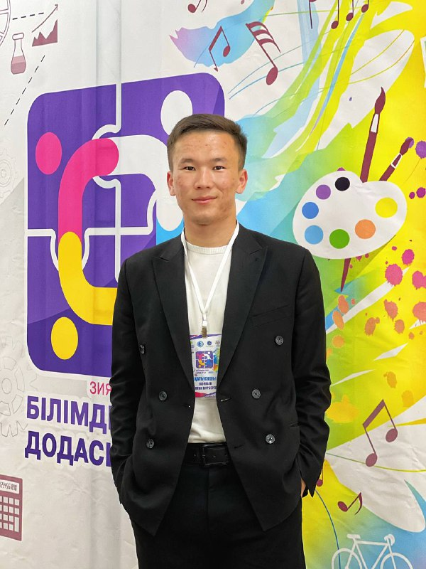
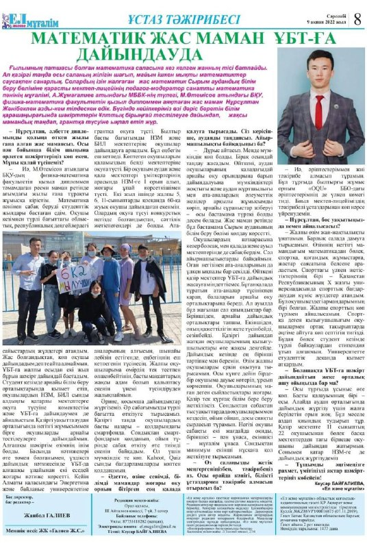

INMAC - innovative mathematical cube

Жәнібек Нұрсұлтан Нұрбергенұлы
Мақсатымыз:
Мектеп оқушыларының математика пәніне деген қызығушылығын арттыру.
Ауыл оқушыларына ҰБТ-ге жүйелі түрде дайындалуға мүмкіндік жасау.

Математик жас маман ҰБТ-ға дайындауда